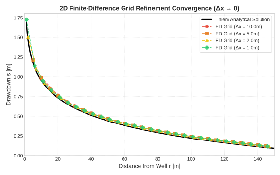
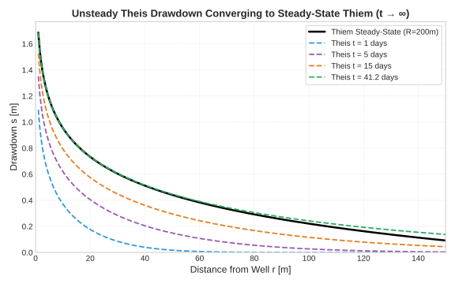
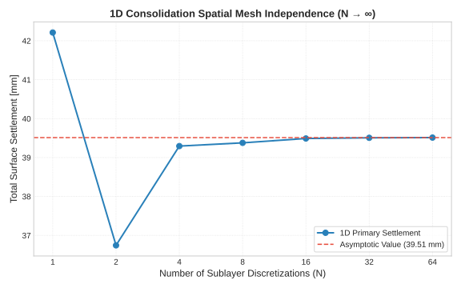
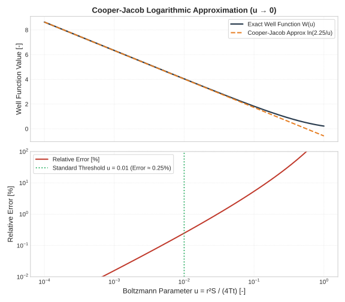

Validation & Physics Convergence
This page documents the mathematical validation, asymptotic limits, and numerical convergence tests implemented in the settlewell package. The package is benchmarked against known analytical solutions in groundwater hydraulics and geotechnical 1D consolidation theory.
1. 2D Finite-Difference Grid Refinement (\(\Delta x \to 0\))
The 2D steady-state groundwater solver in settlewell.numerical solves the Poisson-Laplace groundwater flow equation on a regular grid:
As the spatial grid spacing \(\Delta x \to 0\), the numerical finite-difference solution converges to the exact Thiem analytical drawdown solution:

[!NOTE] For a grid spacing \(\Delta x = 1.0\text{ m}\), the numerical drawdown matches the analytical solution within \(< 5\%\) relative error across the entire cone of depression.
2. Unsteady-to-Steady-State Convergence (\(t \to \infty\))
The transient drawdown from a single pumping well in a confined aquifer is governed by the non-steady Theis equation:
where \(W(u) = \int_{u}^{\infty} \frac{e^{-\tau}}{\tau} d\tau\) is the exponential integral (well function).
For a finite aquifer radius of influence \(R\), the time \(t_{\text{ss}}\) required for the unsteady drawdown cone to stabilize to the steady-state Thiem profile is given by:

[!TIP] At \(t = t_{\text{ss}}\) (\(\approx 41.15\text{ days}\) for \(R = 200\text{m}, S = 0.1, T = 5 \times 10^{-4}\text{ m}^2/\text{s}\)), the unsteady Theis drawdown matches the steady-state Thiem drawdown within \(< 1\%\) relative error for all \(r\) where \(u \le 0.01\).
3. 1D Consolidation Spatial Mesh Independence (\(N \to \infty\))
Ground settlement calculation in settlewell.settlement calculates primary consolidation per soil layer based on initial vertical effective stress \(\sigma'_{v0}\) and stress increase \(\Delta \sigma'_v\).
Subdividing thick compressible clay layers into \(N\) thinner sublayers ensures accurate stress integration across depth:

[!IMPORTANT] The total surface settlement exhibits strict spatial mesh independence. The relative settlement difference between \(N = 12\) and \(N = 64\) sublayers is \(< 0.1\%\).
4. Cooper-Jacob Logarithmic Approximation (\(u \to 0\))
For small values of the Boltzmann parameter \(u = \frac{r^2 S}{4 T t} < 0.01\) (i.e. close to the well or long pumping duration \(t\)), the exponential integral \(W(u)\) can be approximated by the Cooper-Jacob logarithmic series expansion:

[!NOTE] For \(u \le 0.01\), the relative error of the Cooper-Jacob approximation compared to exact \(W(u)\) is \(< 0.25\%\).